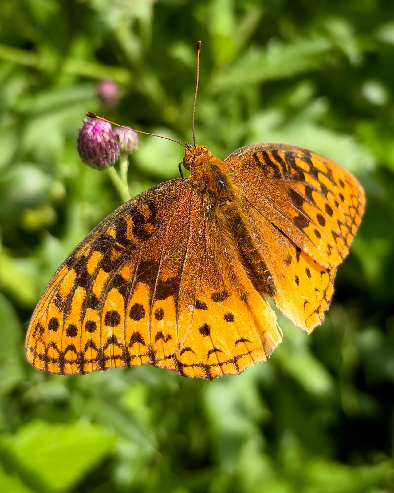
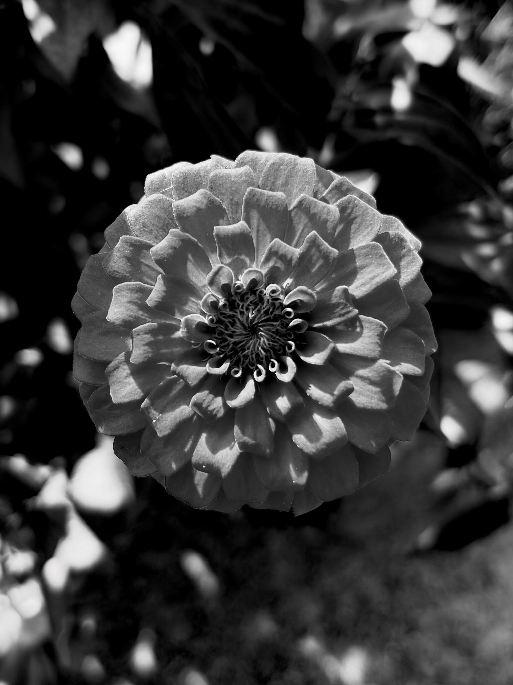
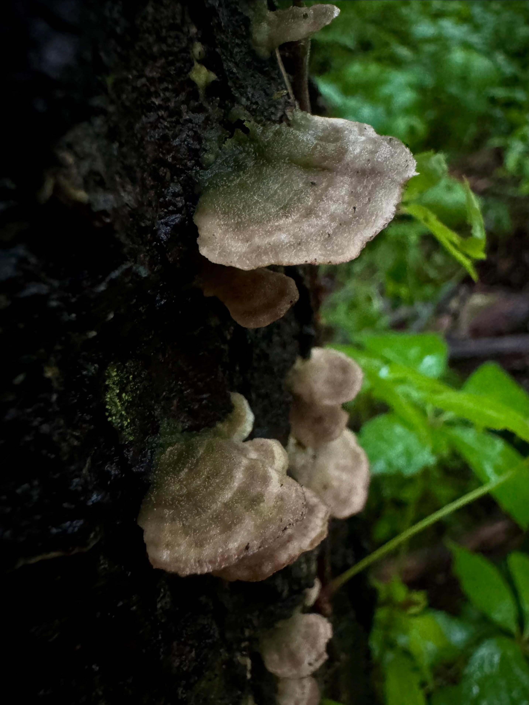
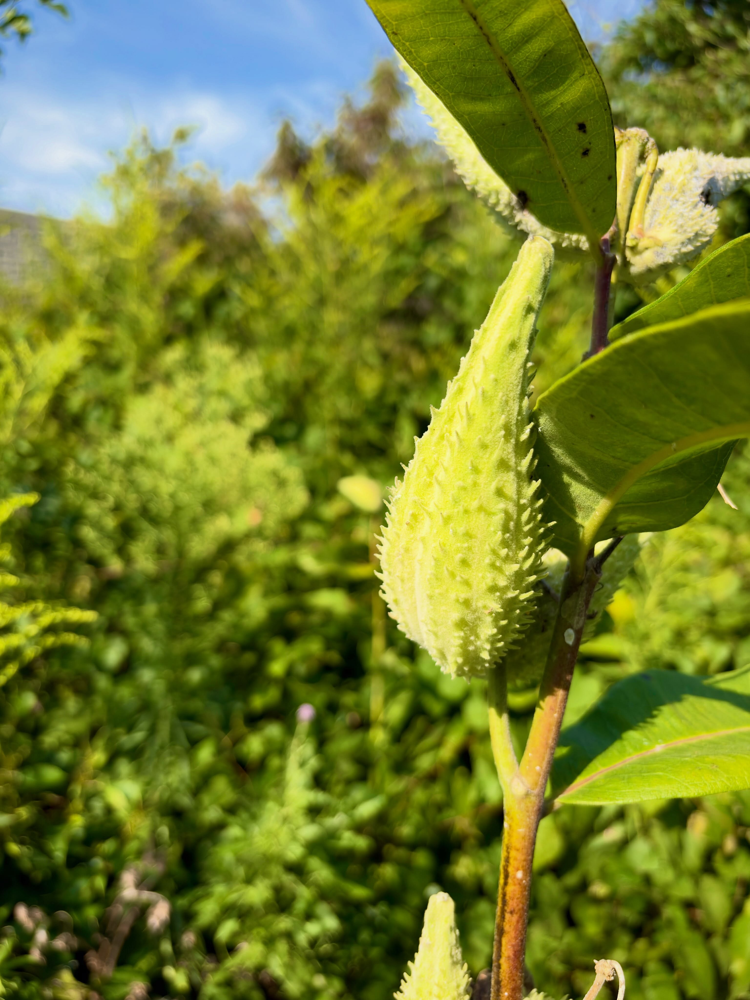

Selected work
Collections

Insects
Small lives, held still.

Floral
Structure in bloom.

Fungi
Found on the forest floor.

Abstracts
Nature, rearranged by the eye.
Fungi
Inky cap
Shaggy mane, doing what it does.
The ink came right off on my fingers. That’s exactly how the scene looked.
2026 collection
Best of Shaggy Manes 2026
2026 collection
Best of Butterflies 2026
New from the field
Recent Fungi
Defining frames
The Elite Wall
Face to face.
Between the leaves.
A little light.
In black and white.
A closer look
Gallery
A wider view
More from the Field
Behind the camera
About Evan
Evan Lowe is an adventure and wildlife photographer. After a career in software engineering, he traded the desk for the field — now he spends his days in the woods and wetlands with an iPhone, photographing insects, wildlife, and wildflowers. Just a guy with a camera and a dream.
Field notes
Butterfly Photography 101
My field rules. Learned out there, not from a book. At first, it was luck. Now it's a skill.
-
Hunt the bush lines by businesses — never busy roads.
Butterflies hate car noise and wind; it bothers their sensors. Wasps, bees, and spiders don't care, but butterflies do. The quiet business lines are where they are.
-
The sun has to hit the line.
Morning sun must be on the bushes. Butterflies and dragonflies bask in it to warm up — while they're cold and slow, that's your window. Spread wings means basking. That's when you can walk right up.
-
Hunt the same hour as the birds.
The birds work those same lines at the same hour, because they know the insects are waking up slow. If the birds are hunting, you're in the right place at the right time.
-
Work the perch.
A territorial butterfly owns a spot. It'll let you get close — and even if you scare it off, stand there and it comes right back to the same spot. Some of my best pictures happened because I just waited at the perch.
-
Wear the hat.
Territorial butterflies react to the colors of my special hat — hackberry emperors and buckeyes especially, they'll come right at it. Didn't read that anywhere. Learned it out there.
-
Shoot the light through the wings.
For a cold basking butterfly, walk around to the other side of its wings and let the sun shine straight through. Share the plain front frame and the backlit frame — that's the proof. No filter, no edit.
-
When they give you the frames, take them.
A cooperative subject won't wait. When you do, you take the damn shots.
October 20, 2026 — first draft, revise as I learn more.
Download the field notes (.md)Available to collect
Limited Edition Prints
Every photograph is produced as a museum-grade giclée, individually numbered in an exclusive edition of 50.
Only 50 impressions of each photograph will be released across all sizes.
Inquire or purchase via Instagram DM.